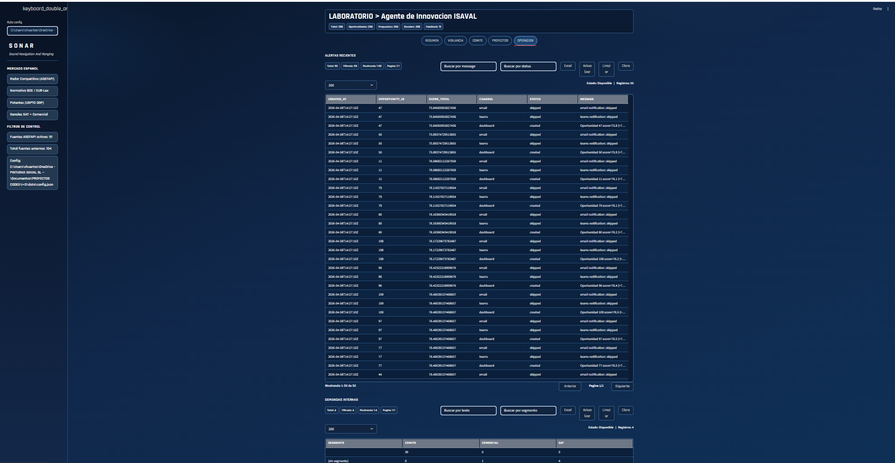

ISAVAL Innovation Agent
Goal: move from scattered technology and competitive monitoring to an internal system able to capture signals, turn them into comparable opportunities, and produce votable strategic dossiers for committee review.
The project no longer stops at monitoring the market. It integrates internal and external signals, strategic scoring, preliminary economics, structured risk, and real committee feedback so the system can learn over time.
What has been built
The solution has been developed on-prem and runs on a recurring capture, normalization, and signal-matching flow. The system includes external sources, internal signals derived from committee minutes and operational pain points, source observability, and a final output aimed at decision-making.
On top of that, the agent generates opportunities, proposals, projects, and strategic dossiers with enough substance for management or committee members to receive not only information, but a defensible recommendation.
What the logbook confirms
- The automated suite has reached 17 passing tests.
- The dashboard is already live with per-source monitoring, coverage, and execution status.
- The database already handles 298 opportunities, 61 proposals/projects, and 241 strategic dossiers.
- The learning loop is active with 15 real committee decisions and ranking recalibration.
Value layers already in place
- Strategic scoring: it prioritizes opportunities according to impact, urgency, alignment, evidence, and risk.
- Preliminary economic model: it includes CAPEX, OPEX, projected margin, and payback.
- Structured risk: it formalizes technical, industrial, commercial, and regulatory evaluation.
- Governance: it generates votable decisions and records committee feedback.
- Learning: it adjusts ranking after real decisions through rescoring.
Operational reading
This piece matters because it organizes a difficult part of innovation work: separating noise from signal and turning heterogeneous information into useful judgment. It is not only a monitoring tool. It is a method layer for management, committee, and R&D.
It also creates a defensible base for accumulated knowledge, reviewing why an opportunity was accepted or rejected, and reducing dependence on untraceable discussions.
System screenshots

Operational header with global metrics, main flow, and dashboard navigation.

Monitoring and prioritization view with consolidated signals and comparative judgment.

Per-source observability and execution tracking to control system coverage and health.

Committee-oriented output with dossiers, feedback, and votable decisions around opportunities.

Detailed decision output with economics, risk, and traceability to prioritize better.
Conclusion
Sergio Huertas turns innovation monitoring into a much more mature internal capability: it measures, prioritizes, documents, learns, and prepares the company to decide faster and with less arbitrariness.